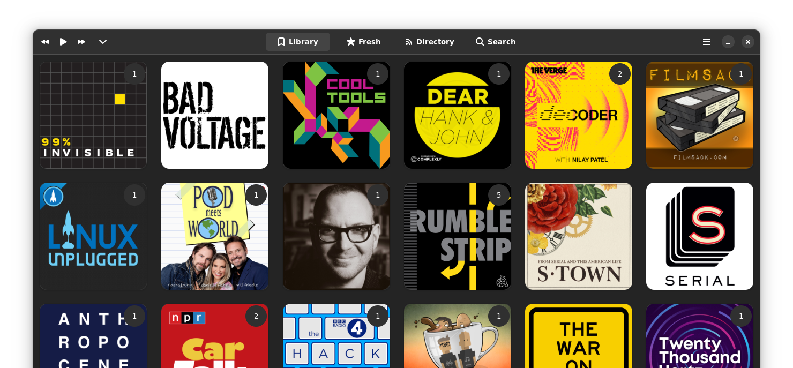
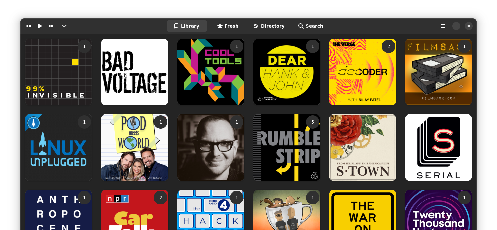

Screenshots


 

With multiple playback speeds, smooth seeking, and episode queueing.
Search across and browse the most popular podcast directory in the world.
Your time is valuable, so Vocal lets you set custom time intervals for the skip forward and backward buttons (so you can catch something you missed a few seconds ago, or jump forward a few minutes to breeze past an advertisement).
Never worry about old downloads filling up your device! Vocal periodically cleans your library so the freshest content is always available, while also keeping the cruft out.
Vocal remembers exactly where you were in each episode, so it can start back right where you left off.
Switch between light and dark themes depending on your mood or to prevent eye strain.
With native notifications, system media keys, and sound menu integration, Vocal feels right at home in most modern Linux distributions.
By using the latest GTK and libadwaita features, Vocal can seamlessly adapt from the largest screen down to the one you keep in your pocket.
Vocal now syncs with gpodder.net, so you can keep your library in sync between multiple devices and apps.
Try it for yourself to see what all Vocal has to offer.
Also available in GNOME Software out-of-the-box in many Linux distributions.
Unless otherwise noted, the contents on this website are licensed under the Creative Commons CC-BY-SA 4.0 license. Contributions welcome on GitHub. Follow us on Twitter @VocalPodcastApp.